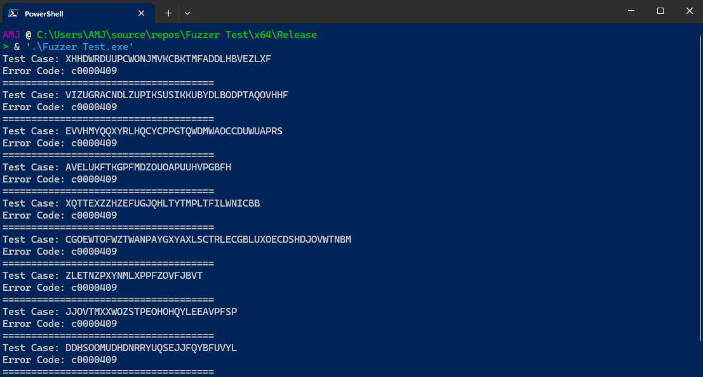

Fuzzer Internals - Part 3: Generation-Based Fuzzers (Dumb Fuzzer)
Table of Contents
Now, I guess we are ready to make our hands dirty by writing a simple fuzzer. I start with Generation Based Fuzzers. As we discussed in Part 1, generation-based fuzzers are a kind of fuzzers that generate input from scratch. As I mentioned befre, they can be divided into two categories: smart fuzzers and dumb fuzzers. Smart fuzzers recognize the input structure, but dumb fuzzers don’t.
Dumb Generation-Based Fuzzers
In this part, I use C++ language to create a simple dumb generation-based fuzzer but basically, the concepts are the same so you can choose your own programming language to continue the tutorial.
Fuzzer Core
To create a simple dumb generation-based fuzzer function, we have to determine the output string details. For example, we can ask the program to generate an output with a minimum length, maximum length, the characters we need to generate, etc.
#include <iostream>
#include <random>
#include <string>
std::string fuzzer(size_t min_len, size_t max_len, const std::string& alphabet)
{
std::string rand_string;
std::random_device rd;
std::mt19937 gen(rd());
std::uniform_int_distribution<size_t> dist(0, alphabet.size() - 1);
size_t len = std::uniform_int_distribution<size_t>(min_len, max_len)(gen);
rand_string.reserve(len);
for (size_t i = 0; i < len; ++i) {
rand_string.push_back(alphabet[dist(gen)]);
}
return rand_string;
}
int main()
{
std::string output = fuzzer(5, 10, "0123456789ABCDEF");
std::cout << output << std::endl;
return 0;
}
The code above generates a random string of hexadecimal characters with a minimum of 5 characters and a maximum of 10 characters that we call Test Cases. Now our fuzzer core is ready!
Fuzzer Execution
At last, we need a way to automatically feed the target program’s input with test cases specific to each program; In this case, our application receives input from CLI Parameters.
#include <stdio.h>
#include <string.h>
#include <stdlib.h>
int main(int argc, char** argv)
{
char name[10];
strcpy(name, argv[1]);
printf("Your name is %s", name);
}
Thus, we can use the operating system APIs to run the vulnerable program, give test cases as parameters, and get information about the program’s exit code. In this case, my OS is Windows so I use WinAPI:
#include <iostream>
#include <random>
#include <string>
#include <Windows.h>
constexpr size_t CYCLE = 20;
constexpr size_t MIN_LEN = 5;
constexpr size_t MAX_LEN = 50;
std::string fuzzer(size_t min_len, size_t max_len, const std::string& alphabet)
{
std::string rand_string;
std::random_device rd;
std::mt19937 gen(rd());
std::uniform_int_distribution<size_t> dist(0, alphabet.size() - 1);
size_t len = std::uniform_int_distribution<size_t>(min_len, max_len)(gen);
rand_string.reserve(len);
for (size_t i = 0; i < len; ++i) {
rand_string.push_back(alphabet[dist(gen)]);
}
return rand_string;
}
int main(int argc, char** argv)
{
std::string cmd = ".\\vuln.exe";
STARTUPINFO si;
PROCESS_INFORMATION pi;
ZeroMemory(&si, sizeof(si));
si.cb = sizeof(si);
ZeroMemory(&pi, sizeof(pi));
for (size_t i = 0; i < CYCLE; i++) {
std::string test_case = fuzzer(MIN_LEN, MAX_LEN, "ABCDEFGHIJKLMNOPQRSTUVWXYZ");
std::string cmd_arg = cmd + " " + test_case;
if (CreateProcessA(NULL, const_cast<char*>(cmd_arg.c_str()), NULL, NULL, TRUE, CREATE_NO_WINDOW, NULL, NULL, &si, &pi)) {
WaitForSingleObject(pi.hProcess, INFINITE);
DWORD exit_code;
if (!GetExitCodeProcess(pi.hProcess, &exit_code)) {
std::cerr << "Failed to get exit code: " << GetLastError() << std::endl;
CloseHandle(pi.hProcess);
CloseHandle(pi.hThread);
return 1;
}
CloseHandle(pi.hProcess);
CloseHandle(pi.hThread);
if (exit_code != 0) {
std::cerr << "Test Case: " << test_case << std::endl;
std::cerr << "Error Code: " << std::hex << exit_code << std::endl;
std::cout << "=====================================\n";
}
}
else {
std::cerr << "Failed to create process: " << GetLastError() << std::endl;
return 1;
}
}
return 0;
}
Let’s compile the Vulnerable and Fuzzer codes and run the Fuzzer executable:

Figure 1: Testing written fuzzer
As you see in the above picture, Our fuzzer gives us a common error code: c0000409 which is a hexadecimal error code. By searching this value, we can reach the STATUS_STACK_BUFFER_OVERRUN error which is an exception code used for stack buffer overflow in Windows OS.

Enjoy :D
comments powered by Disqus